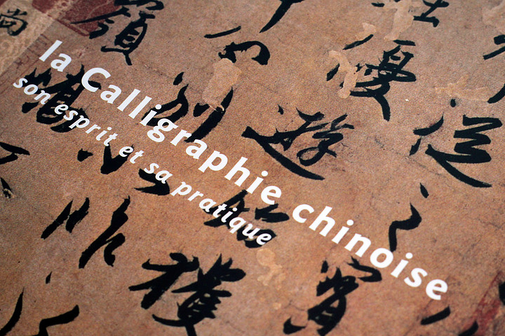
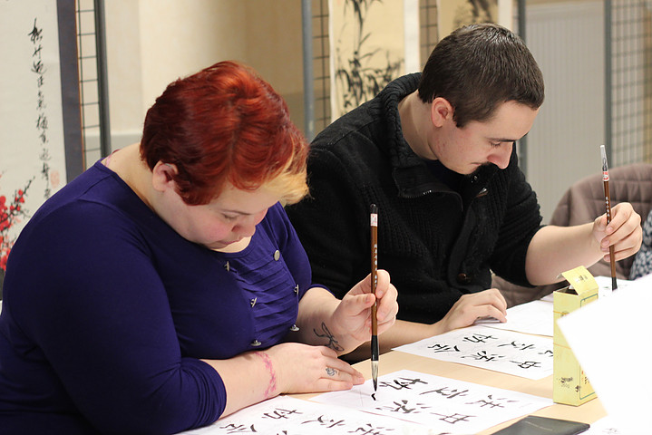
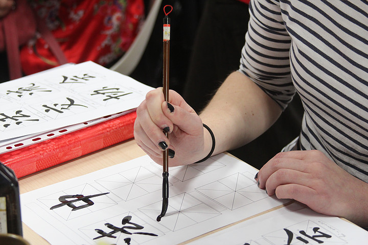
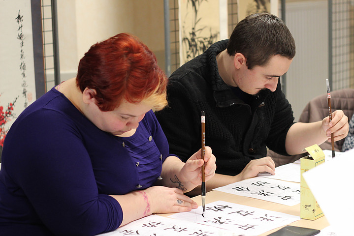
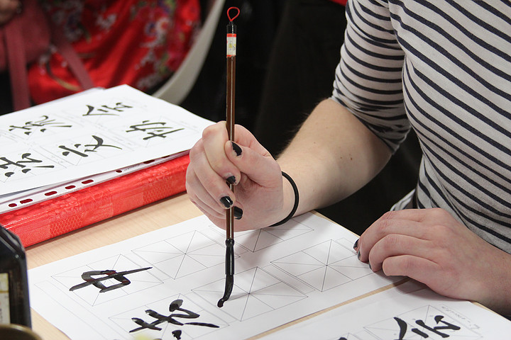
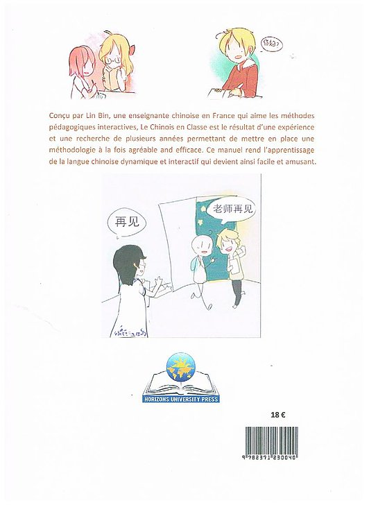
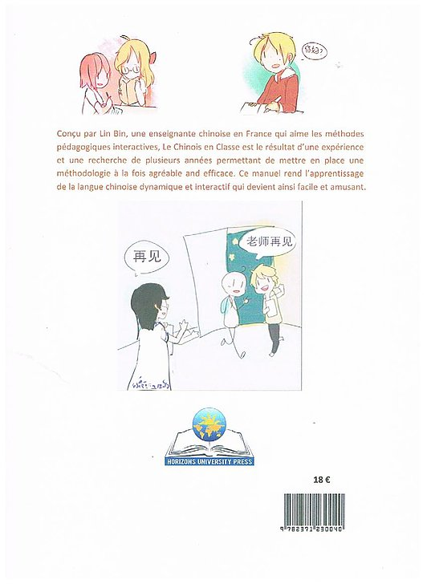

Calligraphie
Activité du 2 février 2016 à Bazeilles  




Langue Chinoise
 
Preface

Preface
Ce manuel, conçu pour une étude au niveau élémentaire, s’adresse aux élèves qui apprennent le chinois en classe.
Il comprend 10 leçons en plus d’une leçon d’initiation sur les pictogrammes, dont l’étude correspond à une durée totale d’environ 32 heures de travail, qui peuvent être réparties en 8 semaines de cours, au rythme de deux heures de cours par semaine. Les listes de vocabulaire se réfèrent à une base d’environ 350 caractères.
L’objectif pédagogique de cette méthode consiste à favoriser non seulement la maîtrise d’un vocabulaire de niveau élémentaire, mais aussi une compétence d’expression orale. Chaque thème est composé de dialogues qui sont utilisés dans la langue courante. Ces dialogues permettent aux élèves de communiquer pendant les cours.
Ce manuel permet d’enseigner la langue orale à travers l’utilisation du pinyin, puis les sinogrammes sont révélés ultérieurement. Ce manuel comprend également trois paliers qui permettent l’assimilation de la langue chinoise. Dans un premier temps, l’élève se satisfera d’une simple lecture du dialogue en pinyin pour éviter un blocage ce qui va donner lieu à une meilleure compréhension du contenu de l’histoire. Dans un second temps, l’élève découvrira le dialogue en sinogrammes favorisant l’apprentissage des caractères. Enfin, l’élève devra maîtriser les sinogrammes.
Chaque leçon se décompose en trois parties qui sont : le vocabulaire, la pratique orale en pinyin et la pratique orale en caractères chinois. Cette décomposition permettra à l’élève d’apprendre, étape par étape, les codes du langage ainsi que de l’écriture.
Les illustrations dans ce manuel sont originales, elles ont été dessinées par une étudiante chinoise qui étudie l’art dans une université chinoise.
LIN Bin
Professeur de chinois aux lycées de Bazeilles et Pierre Bayle
Académie de Reims, février 2015
1 汉字的演变 Evolution des caractères chinois -------------------------------------- 4
2 汉字的故事 Histoire des caractères chinois -----------------------------------------7
3 象形字练习 Exercice du pictogramme ------------------------------------------------9
4 第一课 开学了Leçon 1 à la rentrée ------------------------------------------------- 11
5 第二课 您贵姓 Leçon 2 quel est votre nom ---------------------------------------- 21
6 第三课 互相问候 Leçon 3 salutation ------------------------------------------------ 31
7 第四课 自我介绍 Leçon 4 se présenter --------------------------------------------- 41
8 第五课 我的家庭 Leçon 5 ma famille ----------------------------------------------- 51
9 第六课 我的长相 Leçon 6 mon apparence ----------------------------------------- 61
10第七课 我的东西 Leçon 7 mes affaires --------------------------------------------- 71
11 第八课 我的职业 Leçon 8 mon métier ---------------------------------------------- 81
12 第九课 现在几点 Leçon 9 quelle heure est-il --------------------------------------91
13 第十课 我的活动 Leçon 10 mes activités ----------------------------------------- 101
14 附录 (appendice) 1 数来宝 - 哪国人 quelle nationalité ----------------------- 111
15 附录 (appendice) 2 数来宝 - 今年多大 quel âge cette année --------------- 112
16 附录 (appendice) 3 对话练习exercices de dialogue -------------------------- 113
17 附录 (appendice) 4 歌曲 (chanson) - 茉莉花 (jasmin) -------------------------131
Séries et films
Séries- Meteor Shower (Chinois)
Fiche - Episodes - The queen of SOP (Taïwanais)
Fiche - Episodes - Prince turns into frog (Taïwanais)
Fiche - Episodes